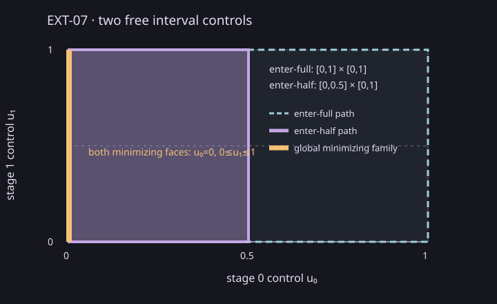

Analytic answer
The enter-half path has feasible controls [0,0.5]×[0,1]; enter-full has [0,1]×[0,1]. Both minimize x_terminal=u₀ at zero, retaining the complete tied families u₀=0, 0≤u₁≤1.
Open the standalone two-control example (includes a labelled plot, fixture, independent answer, and reproduction commands).

Measured execution
One excluded 10-call warmup followed by seven measured batches of 20 calls: 140 measured calls, no failures. Median batch duration is 72,596,100 ns (range 71,067,600–74,229,000 ns); median individual call is 3,590,600 ns. Each end-to-end interval includes fixture/provider setup, complete two-path relation assembly, both HiGHS LP solves, tied-face construction, and verification of both path families. CTest and build time are excluded.
| Batch | Calls | End-to-end total (ns) | Failures |
|---|---|---|---|
| 0 | 20 | 71,067,600 | 0 |
| 1 | 20 | 72,596,100 | 0 |
| 2 | 20 | 71,333,400 | 0 |
| 3 | 20 | 72,624,000 | 0 |
| 4 | 20 | 73,628,100 | 0 |
| 5 | 20 | 74,229,000 | 0 |
| 6 | 20 | 71,933,200 | 0 |
Recorded provider: csl.lp.highs@1.1.0+highs.1.11.0. Verifier: csl.hybrid.exact-linear-h. Outcomes for both branches are feasibility, objective optimality, and continuous coverage established.
Scope and provenance
This is descriptive evidence for one Windows MSVC Release host and one analytic fixture. It makes no comparison, speedup, source-mapped bottleneck, or scalability claim. It covers exactly two scalar free controls; larger polytope dimensions and general horizons remain unmeasured. Assurance is numerical binary64, not validated arithmetic.
Source commit: 22758dadda8421f2c75ea3403dadc33dda682253. See versioned record, raw per-call timings and batches, smoke record, summary CSV, hash manifest, measured driver, and offline ZIP.